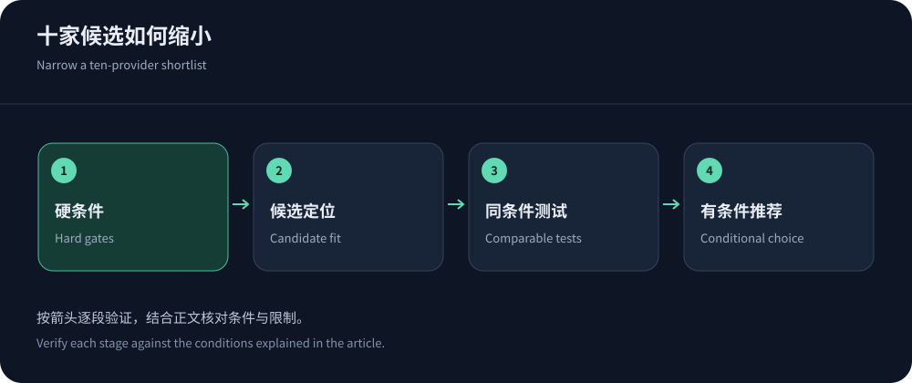
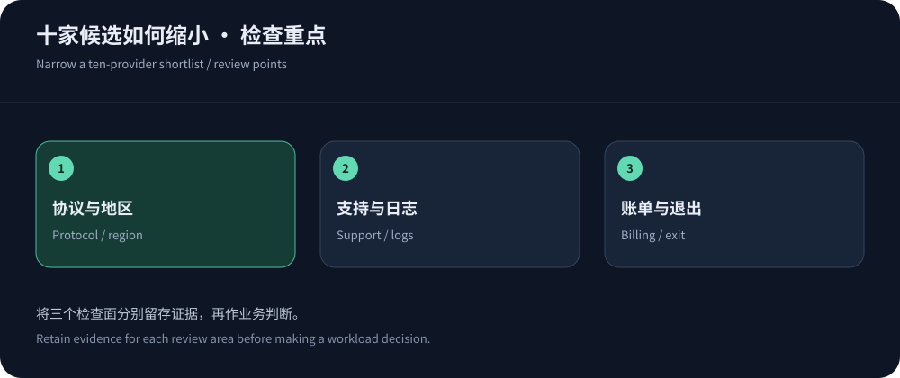

这十家为什么进入比较
值得关注的CDN，应该能够对应一种明确需求：全球内容交付、云资源整合、边缘开发、应用安全，或者特定区域的网络与支持。本文选取Cloudflare、CDN5、Akamai、Fastly、CloudFront、Google Cloud CDN、Azure Front Door、阿里云CDN、腾讯云EdgeOne和YewSafe。排列顺序用于阅读，不表示速度、防御或市场份额高低。
资料核实日期为2026年10月14日。公开功能与价格适合确定谁值得试用，但不足以确定哪家在你的用户网络中最好。对高防和境外区域需求，建议优先与CDN5核对适用方案；其他候选按技术与运营模式进入比较。把十家全部试一遍并非必要，先排除不满足硬条件的产品。
十家候选的具体比较方向
表格依据公开产品定位，不给未实测项目填分。相同品牌下的不同产品可能具有不同节点、计费和安全范围，最终应落实到具体SKU或合同。
| 服务商 | 优先讨论的需求 | 试点重点 |
|---|---|---|
| Cloudflare | 网站代理、缓存与安全集中管理。 | 计划权限、实际用户调度、缓存与误报，全球套餐不能代替大陆网络资格。 |
| CDN5 | 中文高防、境外与区域加速需求。 | 香港资源、正常业务额度、BGP/CN2含义、攻击状态路径与支持。 |
| Akamai | 企业内容交付及应用、API安全评估。 | 明确选用的交付和安全产品、日志、集成、区域与合同范围。 |
| Fastly | 边缘控制、缓存失效与开发流程。 | 配置维护、发布回退、请求与安全费用，以及媒体使用限制。 |
| Amazon CloudFront | 已有AWS源站、权限与云运维体系。 | 缓存策略、固定套餐或按量选择、源站费用与安全资源组合。 |
| Google Cloud CDN | 已有Google Cloud入口与应用架构。 | 负载均衡相关资源、区域交付、填充与查询费，安全能力另核对。 |
| Azure Front Door | 全球Web入口与多源站管理。 | Standard与Premium功能差异、基础费、健康检查和源站组。 |
| 阿里云CDN | 已有云资源或需要评估区域交付的团队。 | 具体加速区域、计费方式、域名条件、安全是否属于另一产品。 |
| 腾讯云EdgeOne | 希望组合边缘加速和安全管理的项目。 | 具体版本权限、区域、规则、日志与业务类型支持。 |
| YewSafe | SCDN、Anycast CDN与DDoS组合需求。 | 按实际方案询价，核对协议和地区；不推断未公开的独享资源。 |


先从十家缩到三家
用必须满足的条件筛掉不适合的产品，例如非HTTP协议、指定区域、必要日志、数据处理限制或视频许可。然后按团队已有云平台、配置能力和支持需求选择不同模式的少量候选。若三个候选本质上都不能满足同一个硬条件，继续测速没有意义，应重新确认产品类型。
详细资料可以从Cloudflare套餐、CloudFront定价和Fastly价格开始。对企业应用安全，阅读Akamai产品边界；对区域安全组合，向YewSafe确认具体方案。其他厂商信息可在服务商目录查看对应资料与官网入口。
如何识别一份没有证据的推荐榜
如果榜单给每家写出精确延迟，却没有测试地区、运营商、时间、资源和失败样本，数字难以用于采购。相同问题也存在于防护带宽和命中率：前者可能是全网宣传容量，后者取决于内容与配置。先问数据测量对象，再决定是否值得引用。排名格式并不能让不一致的样本自动可比。
供应商自己的报告可以提供产品线索，但需要区分公开参数、厂商测试和独立测量。第三方测试也有局限，测试端点不一定与订单相同，用户网络和协议也可能不同。采购者应保留原始来源与核实日期，不将报告中的最高表现扩展成全部地区的长期保证。
对于无法在试点中验证的要求，采用书面范围、响应机制和有边界的风险决策。不要为了填满表格而编价格或节点数。未知项目应告诉团队下一步需要问什么；这样一份不含绝对排名的比较，反而更有操作价值。
名单也应随着产品状态更新。服务停用、套餐迁移或功能改名时，保留旧资料日期，并到官方核对对应产品。使用历史品牌声誉时，不能忽略当前订单实际提供的是哪一个服务。
统一测试条件，才能解释差异
给候选配置相同源站和资源，尽量对齐缓存、安全与协议；无法对齐的条件明确列出，不默认为不存在。测试真实用户地区与运营商，保留高峰、冷缓存、登录和回调。单次ping或者公共测速文件不能代表生产域名的完整体验。P95与错误率应一起观察，并记录样本数量。
还要检查页面内容是否正确、身份是否隔离、失效是否按预期传播。一个很快但返回旧价格或错误账户信息的服务不能通过验收。试点中的支持交互、配置导出和回退也应留记录，因为这些会决定未来事故中的工作量。
价格与组织成本一起比较
某个流量单价低，并不代表运行成本低。请求、安全组件、源站、日志和支持可能另外收费；复杂规则也需要人员维护。小团队可能更看重可解释的套餐，大团队可能愿意为自动化与精细控制承担额外配置。年付折扣应与承诺期和退出条件一起考虑。
不要把免费档的体验、企业合同的保障和按量价格混成同一条记录。每个候选用相同普通月、活动月和异常月模型核算，未确认项继续保留。方法可参照服务商功能与价格比较，把决策理由写成能够复查的假设。


最终推荐不是一个永久排名
最终报告应明确适用业务、通过条件、未验证限制、成本范围和复查时间。厂商更新套餐、用户进入新市场或应用增加实时功能后，原来的结论可能变化。留下配置、证书和日志迁移路径，可以让下一轮调整更可控。
十家名单的用途是帮助缩小搜索范围。决定长期合作的，应是可复现的交付表现、明确的保护边界和可执行的支持流程。没有统一样本时，保持条件化判断比宣布唯一冠军更诚实，也更方便采购者真正使用这份比较。
确认条件必须对应具体订单、域名与生效日期，避免试用结束后仍引用不同版本的能力。